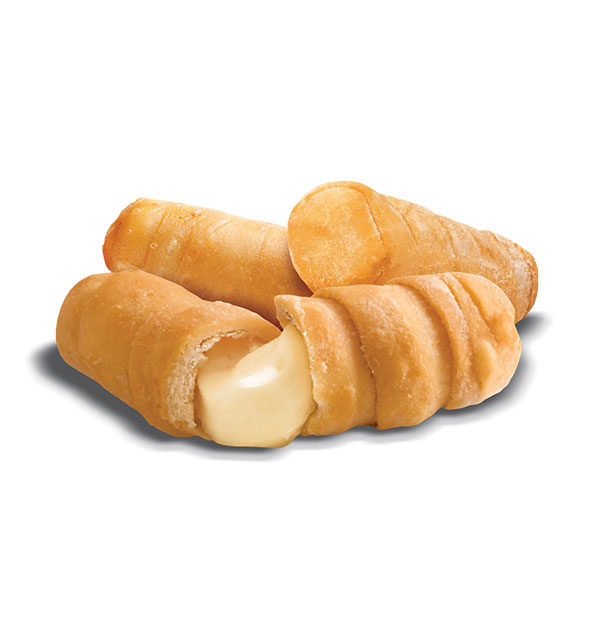
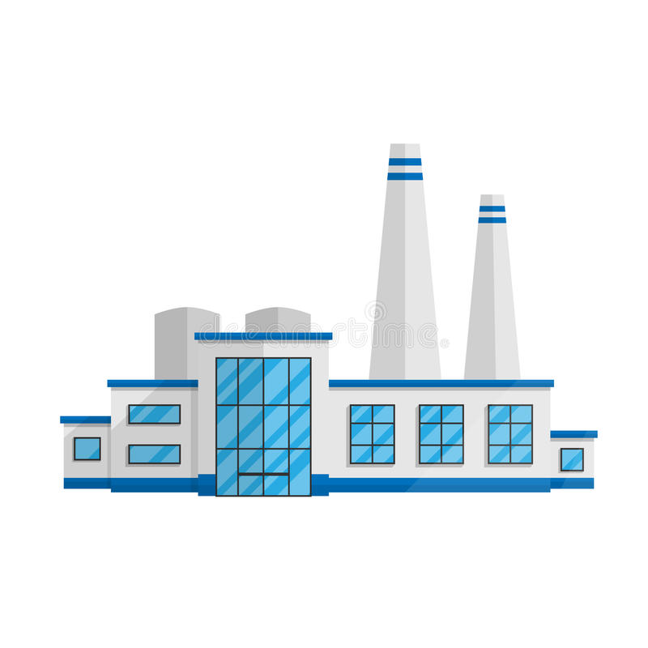

PEDIDOS..  .. 927507110
.. 927507110
PEDIDOS.. .. 927507110
Quienes Somos 
Somos una familia Venezolana con orígenes Portugueses que en búsqueda de nuevas oportunidades regresamos en el 2019 a Braga y decidimos a mediado del año 2022 crear un proyecto culinario. Nuestra propuesta es llevar a los hogares Portugueses el delicioso sabor de la comida Venezolana a través de los Tequeños, Empanadas, Cachapas, especialmente convertir los «Tequeños» en un salgadinho de alto deleite. ??? Así empieza TequeShopt, una propuesta de comida artesanal que utiliza los mejores productos tanto locales como Venezolanos, que tiene como misión innovar constantemente, así aportar una fusión de sabores para obtener un producto gourmet de calidad. ?
Nuestros Valores
Para Nosotros, las personas son su activo principal y por esto, promueve los siguientes valores, tanto hacia los trabajadores como hacia los consumidores y clientes de la marca: Liderazgo Responsabilidad Compromiso Ético Calidad Pasión por la Innovación Respeto Integridad Honestidad Lealtad Igualdad
La Fábrica 
Desde LA FÁBRICA, nos esforzamos cada día por elaborar los mejores productos e innovar con deliciosas alternativas para que esos momentos se conviertan en memorables y repetibles. Además contamos con nuevas asociaciones para adaptarnos a las nuevas tendencias. Actualmente contamos con un amplio catálogo, elaboramos desde quesos, tequeños, cachapas y cachitos, hasta opciones más variadas de Arepas Rellenas, sin olvidar creaciones más irreverentes como Chuleta Ahumada, Queso Blanco y Chorizos Carupaneros. Cada producto está hecho con nuestro ingrediente principal «mucho cariño» sin este nada sería posible.